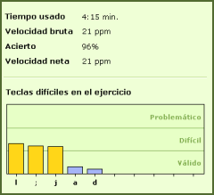

El porcentaje de acierto es la relación de teclas correctas con respecto a las teclas totales pulsadas.Cuanto mayor sea este porcenaje, menor número de errores habrá comentido. El 100% de acierto significa que no cometió ningún error.
Para calcular el acierto, cada palabra con un error se penaliza con cinco caracteres menos en el recuento, independientemente del número de errores cometidos en la palabra.
El porcentaje de acierto siempre se redondea hacia abajo, por ejemplo: 96,99 se redondea a 96% y no a 97%.